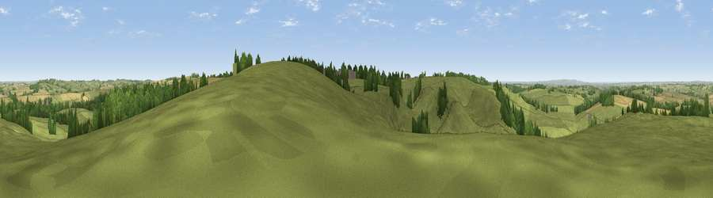

Viewpoint near Tilton on the Hill
#23813 in England · top 29% of its area beats it · near Tilton on the HillThe view, rendered

A 360° render of this exact spot computed from the terrain model, tree cover and land cover — summer colours, afternoon light, calibrated against photographs of famous viewpoints. Real trees, hedges and buildings will differ in detail.
The panorama
Grey silhouette: terrain skyline in each direction (720 bearings, Earth curvature and refraction included). Dashed green: skyline with trees (+15 m) and buildings (+8 m) as obstacles. Blue strip: how far the ground is visible on each bearing.
Where the view opens
Wedge length = distance to the farthest visible ground on that bearing (vegetation-aware). Rings at 10, 25 and 50 km.
What fills the view
79% grassland · 13% cropland · 7% woodland ·
Angular shares of the visible panorama (visual magnitude), not map area. Landscape diversity 0.29 (0–1 Shannon).
Key numbers
More beautiful places nearby
The staircase of upgrades: each row has a higher view potential than everything closer. Driving times are estimates from straight-line distance, calibrated against real road routing — check an actual route before setting out.
| Place | Direction | Drive | Score |
|---|---|---|---|
| Life Hill | SW · 2 km | ~6 min | 50.3 |
| Whatborough Hill | E · 3 km | ~7 min | 57.1 |
| Viewpoint near Cold Newton | WSW · 3 km | ~7 min | 57.3 |
| Viewpoint near Burrough on the Hill | NNE · 6 km | ~13 min | 66.0 |
| Old John | WNW · 22 km | ~36 min | 70.3 |
| Broombriggs Hill | WNW · 24 km | ~39 min | 74.4 |
| Viewpoint near Woodhouse Eaves | WNW · 24 km | ~40 min | 77.7 |
| Viewpoint near Elmley Castle | SW · 101 km | ~126 min | 80.5 |
52.64964, -0.90947 · source: screening · position refined by local search. Computed location — check access rights before visiting.